Обзор
В этом уроке мы будем использовать наш Детальная гибка system и покажет вам процесс настройки перемещения вершин с помощью Vertex Paint. Мы будем использовать все три цветовых канала вершин для управления различным поведением движения геометрии листа нашего куста. Этот эффект предназначен для использования на объектах растительности и поможет нам создать благоприятный для производительности эффект изгиба на нашем активе куста. Лучше всего он подходит для растительности с большими листьями, такой как пальмы и кусты папоротника.
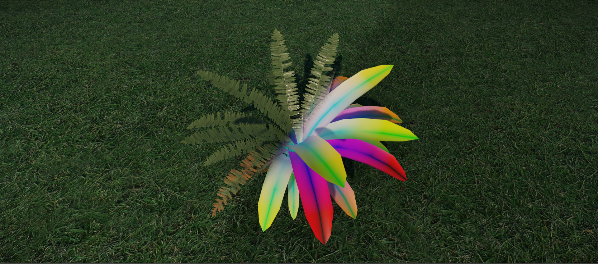
Рис.1: Окончательный ассет с базовым цветом вершин для работы этой системы.
Эта система применяет к вершинам определенное поведение движения в зависимости от назначенного им цвета. Вы можете изменить интенсивность этого движения с помощью параметров шейдера.
Учебные файлы
Исходная сцена 3dsMax с экспортированными файлами CRYENGINE:
Предварительные требования для этого урока
Прежде чем продолжить изучение этого руководства, обязательно прочтите и усвойте следующие темы:
Полезная информация
При работе над активом обязательно помните о следующих вещах:
- Распределение полигонов по геометрии изгиба должно быть максимально равномерным, чтобы избежать артефактов изгиба.
- Все три канала цвета вершин по-разному влияют на ваш лист. Следовательно, крайне важно, чтобы их нужно было просматривать и редактировать отдельно.
- Ветер в CRYENGINE необходимо включить, поскольку он влияет на изгиб листьев синего канала и небольшую амплитуду изгиба красного канала. Вы можете сделать это под Окружающая среда в Роллапбар изменив вектор ветра примерно на 1,0,0.
- Разместите актив как объект растительности через Растительность инструмент.
- Гибку необходимо активировать в Растительность инструмент.
- Деталь Гибка должна быть активирована в Material Editor.
- Листья должны быть отдельным объектом, а не несколькими объектами, связанными с одним узлом.
- При рисовании вершин убедитесь, что вы покрыли каждую вершину черным цветом. Затем примените специальный цвет RGB. Таким образом, вы можете быть уверены, что каждая вершина окрашена.
Первоначальная настройка 3dsMax
В этом уроке мы будем создавать наш актив в следующем каталоге:
<Your_Project>\Assets\Objects\tutorial\vegetation\03\bush\detail_bending\
Чтобы быть вместе, сохраните сцену 3dsMax в этом месте. Все наши экспортированные активы будут сохранены там. Некоторые из текстур, которые мы используем, взяты из существующего ресурса, а местоположение существующего актива будет указано позже в руководстве.
Мы продолжим исходить из предположения, что вы уже создали актив, поскольку это не учебник по моделированию 3dsMax. Мы начнем с подготовки ресурса для CRYENGINE, назначения SubIds соответствующим полигонам и настройки материала.
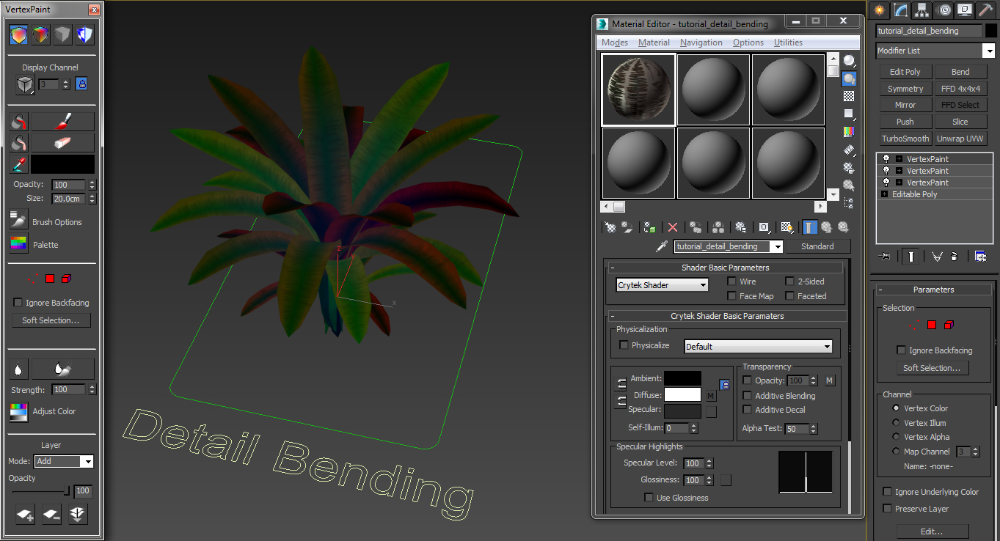
Рис2: 3dsMax обзор готовой модели.
Материал
Сначала мы настроим материал для объекта. В 3dsMax откройте Material Editorи создайте новый материал под названием tutorial_detail_bending.
Загрузите диффузную карту и карту нормалей для путей материала. Диффузная карта должна содержать альфа-карту непрозрачности. Карта нормалей также должна содержать альфа-карту для значения сглаживания PBS.
Файл примера относится к следующим обучающим текстурам:
<Your_Project>\Assets\objects\natural\bushes\ground_cover_fern\ground_cover_fernbush_diff.tif><Your_Project>\Assets\objects\natural\bushes\ground_cover_fern\ground_cover_fernbush_ddna.tif>
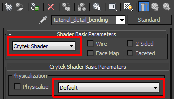
Рис3: Настройка параметров шейдера
В Основные параметры шейдера раздел:
- Выберите Крайтек Шейдер.
- В Физическая реализация раздел, не проверяйте Физически флажок.
- В следующем раскрывающемся списке выберите По умолчанию.
- Установить Альфа-тест до 25.
См. Рис2 выше и обратите внимание на настройку материала в редакторе материалов 3dsMax.
Экспортируйте материал
Теперь мы настроили материал для объекта с его свойствами листа.
- Убедитесь, что в редакторе материалов (и на родительском уровне) выбран правильный материал.
- В экспортере CRYENGINE нажмите кнопку Создать материал кнопка. Сохраните это в том же каталоге, что и объект:
<Your_Project>\Assets\Objects\tutorial\vegetation\03\bush\detail_bending\tutorial_detail_bending.mtl>
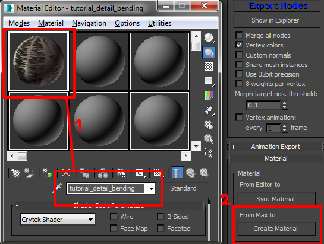
Рис. 4. Выбор правильного материала для экспорта в формате .mtl.
Геометрия
Наша геометрия для этого урока будет кустом папоротника. Это растение идеально подходит для объяснения этого типа технологии. Создайте одну большую сетку листьев для куста папоротника и примените к ней только что созданный материал (tutorial_detail_bending.mtl). Убедитесь, что геометрия вашего листа четко мозаичная. В противном случае изгиб сломается. Наконец, используйте Развернуть UVW модификатор, позволяющий подогнать его оболочку UV под один из листьев текстуры.
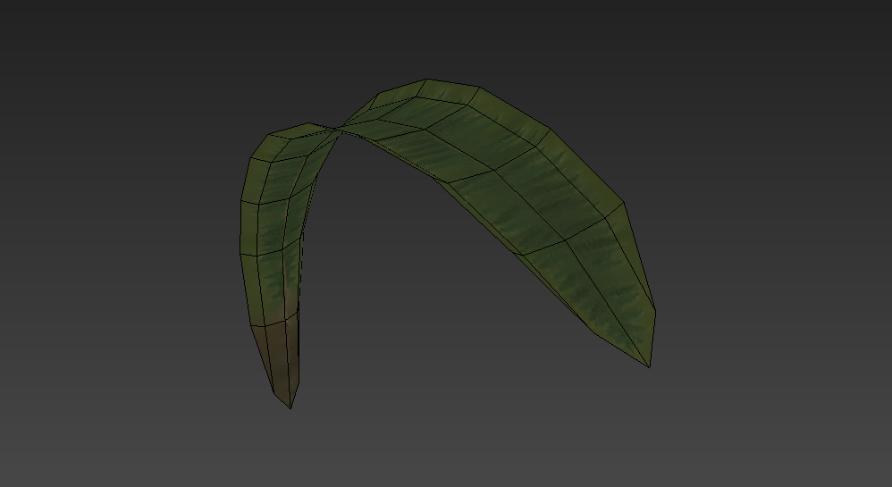
Рис5: Геометрия листа.
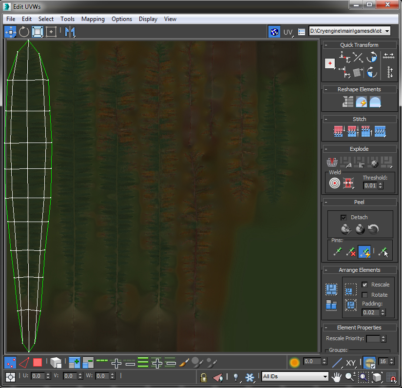
Рис6: UV Макет листа в 3dsMax. Обратите внимание на UV-развертку листа, соответствующую базовой текстуре.
Добавляем цвет вершин
Следующий шаг — окраска цвета вершин нашей геометрии. Мы используем все три цвета вершин для управления различным поведением движения геометрии листа.
| Красный | Создает неравномерный и небольшой изгиб снаружи. Черный цвет означает отсутствие изгиба, а полный красный цвет 255/0/0 означает максимальный изгиб. Само движение меньших фигур происходит вперед и назад по оси X. |
|---|---|
| Синий | Создает медленный и равномерный изгиб. Черный цвет означает максимальную степень изгиба, а полный синий цвет 0/0/255 означает полное отсутствие изгиба. Само движение больших фигур происходит вперед и назад по оси Z. |
| Зеленый | Задерживает начало движения. Каждый зеленый оттенок начинает изгибаться в разное время, создавая различные варианты изгиба. |
Визуализация цветов вершин
Во время рисования объекта-листа лучше всего показывать цвета его вершин, чтобы изменения цвета вершин были видны. Чтобы увидеть их, щелкните правой кнопкой мыши выбранный объект и выберите Свойства объекта.
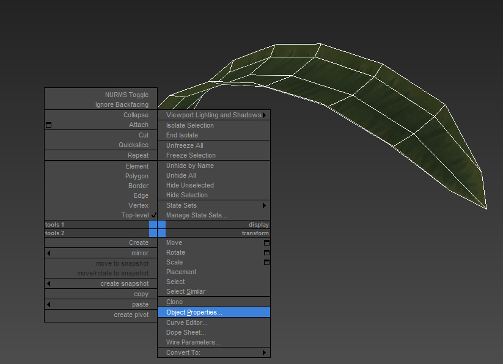
Рис.7: Выбраны свойства объекта «Лист».
Активируйте Отображение вершинного канала установите флажок под Свойства отображения в рамках Общий Вкладка. Убедитесь, что у вас есть Цвет вершины выбран в раскрывающемся меню. Нажмите OK чтобы подтвердить эти изменения.
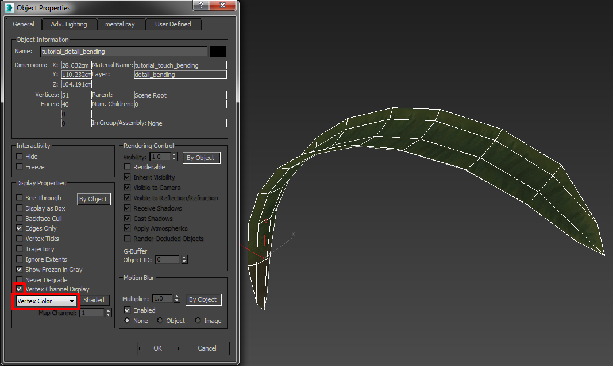
Рис.8: Свойства объекта «Лист», включающие предварительный просмотр цвета вершин.
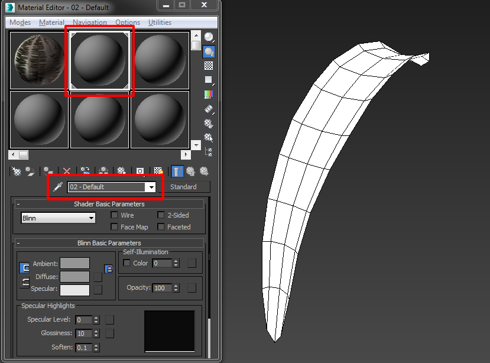
Рис.9: Лист, показывающий цвет вершин с временно назначенным белым материалом по умолчанию.
Добавление неравномерного микроизгиба (красный канал)
Каждый цвет будет распространяться через отдельный Модификатор Vertex Paint. Несмотря на то, что не существует порядка, в котором должны быть окрашены цвета, убедитесь, что вы используете Красный -> Синий -> Зеленый.
Чтобы обеспечить неравномерный микроизгиб:
- Добавить Модификатор Vertex Paint к активу.
- Убедитесь, что Цвет вершины в Свойства вершинного канала выбран.
- Перейти к Режим выбора вершини выделите все вершины.
- Выбрать Черный цвет из палитры цветов.
- Закрасьте/залейте все вершины черным цветом.
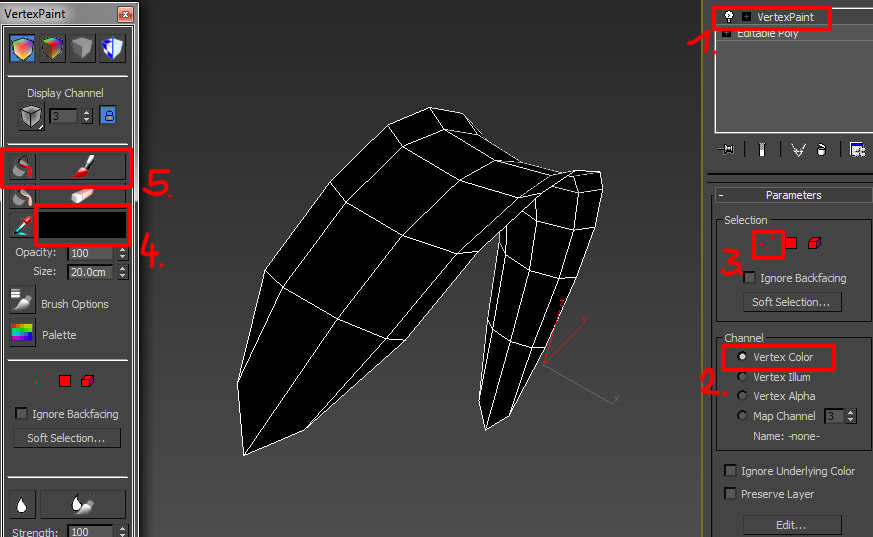
Рисунок 10: Свойства модификатора Vertex Paint.
Выделите внешние вершины с обеих сторон листа и закрасьте их цветом 255 красного цвета. Эти вершины получат максимальную амплитуду изгиба. Затем выделите вершины между границей и центром и примените более темный красный цвет для более низкого эффекта изгиба ближе к стеблю. Это позволяет добиться спада амплитуды изгиба снаружи внутрь створки. В этом случае мы будем использовать красный со значением 128 . Убедитесь, что средняя линия всегда должна оставаться черной. Небольшие и неравномерные движения должны происходить только в самой тонкой части листа, на его границе. Закройте модификатор Vertex Paint..
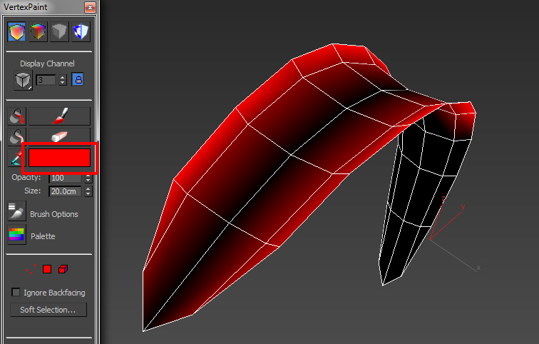
Рис.11: Красный цвет вершины листа.
Дублируем геометрию листа
Чтобы применить будущие синие и зеленые цвета, в геометрии вашего куста все листья должны быть уже на своих местах. Итак, начните делать копии своего листа и размещайте их, пока не получите правильно выглядящий куст папоротника.
Как только вы закончите с геометрическим макетом куста папоротника, назовите его как tutorial_detail_bending.
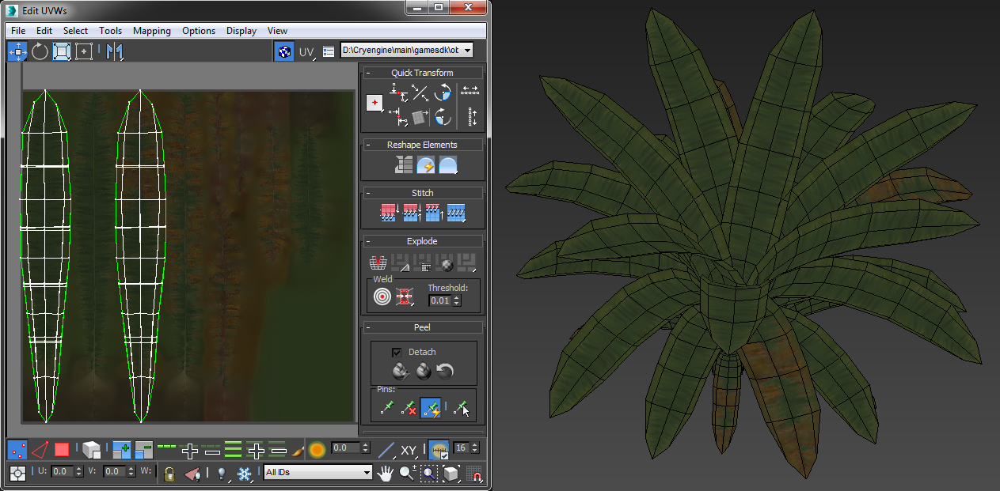
Рис. 12: Полный куст папоротника с соответствующим материалом, отключенным цветом вершин и двумя вариантами оболочки листьев UV.
Добавляем обычный макросгиб (Синий канал)
Теперь, когда у нас есть все наши листья с меньшим изгибом краев, теперь мы можем добавьте поверх этого большие движения листьев.
- Сначала обязательно примените серый материал по умолчанию и снова активируйте цвет вершин (чтобы помочь вам визуализировать цвета вершин).
- Добавить еще один новый Модификатор Vertex Paint.
- Снова закрасьте весь объект черным (Черный = максимальное движение в синем канале).
- Активировать Круговая область выделения. Активировать Мягкий выбор чтобы получить правильный спад, выбирая только средние вершины.
- Установите значение синего цвета 255. Это позволит листьям двигаться вверх и вниз, но с меньшей интенсивностью по направлению к их началу.
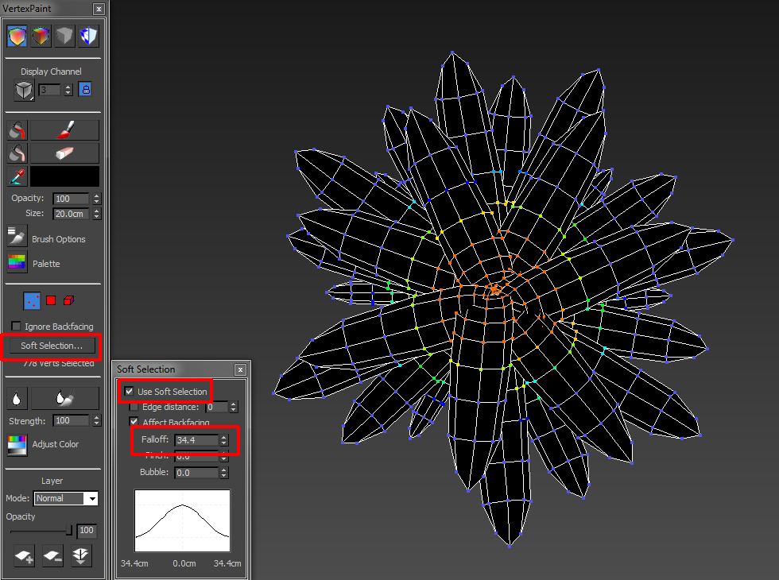
Рис. 13: Куст с мягко выделенными вершинами, вид сверху.
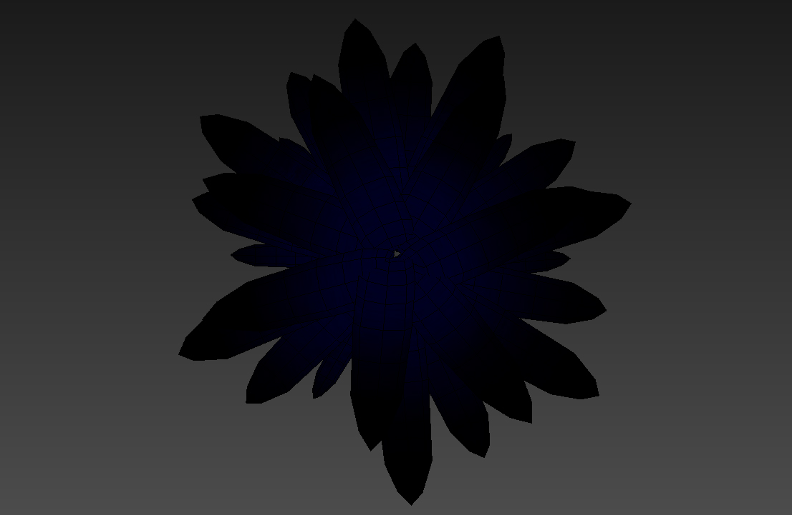
Рис.14: Синий цвет вершин на листьях.
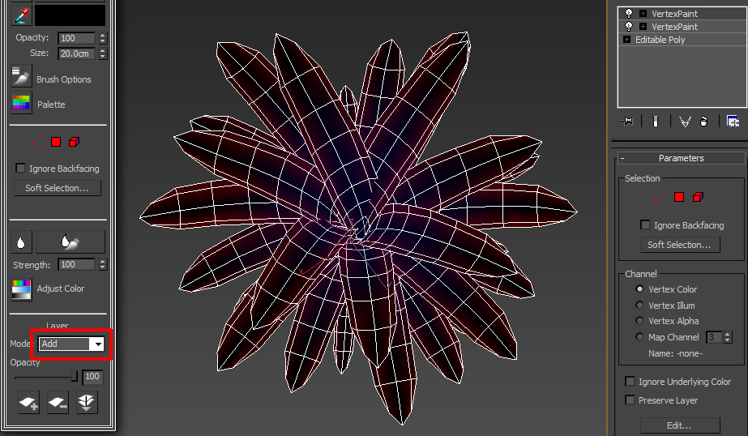
Рис.15: К синим значениям добавлен красный цвет.
Добавление вариации движения (Зеленый канал)
На этот раз через зеленый канал мы добавим временные задержки к движению листьев, чтобы нарушить регулярность и добавить вариации.
- Добавьте последний Модификатор вершинной краски к вашему кустовому активу.
- Закрасьте свой актив черным и перейдите в режим элемента.
- Выберите первый лист и закрасьте его зеленым цветом 255. Каждый лист должен иметь разный оттенок зеленого, чтобы избежать одновременного движения двух листьев. Покрасьте следующий лист в зеленый цвет 220, следующий за ним в зеленый цвет 190 и так далее. Не обязательно иметь эти точные значения, убедитесь, что вы используете разные оттенки зеленого для большого количества вариаций.
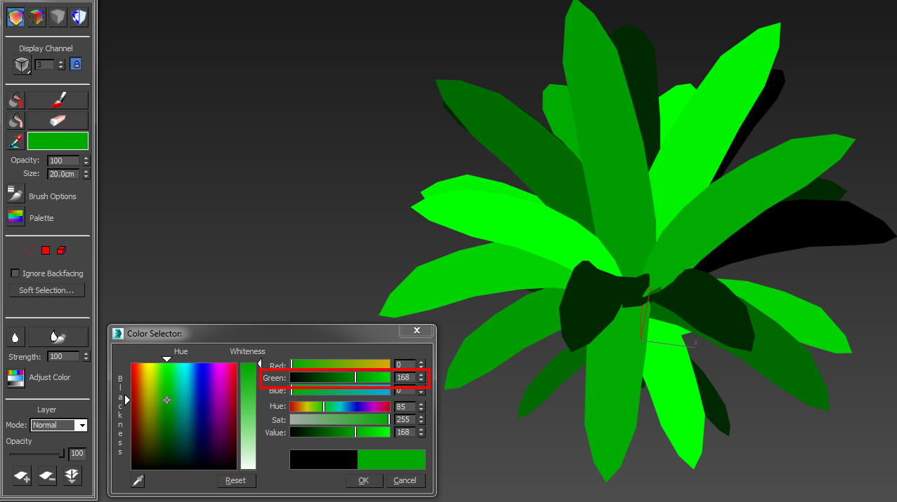
Фото 16: Нашему кусту папоротника добавлены оттенки зеленого.
Теперь перейдите в раздел «Слой» модификатора Vertex Paint и снова выберите добавить режим чтобы объединить зеленый цвет вершины с другими цветами ниже. Теперь ваш актив должен отображать все три цвета вершин.
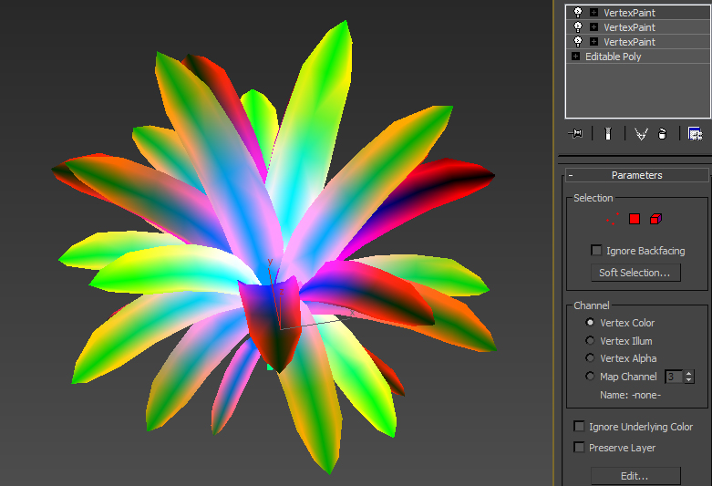
Рис. 17: Видны все три канала цвета вершин.
Переназначить тот tutorial_detail_bending материал для вашего объекта.
Экспортируйте геометрию
Теперь мы готовы экспортировать нашу геометрию в движок. В экспортере CRYENGINE:
- Добавьте корневой узел актива в список экспорта (в данном случае он называется tutorial_detail_bending).
- Выбрать Геометрия (*.cgf) из Экспорт формат выпадающий список.
- Обязательно установите флажок Цвета вершин.
- Нажмите кнопку Экспорт узлов кнопку, чтобы экспортировать ресурс в CRYENGINE.
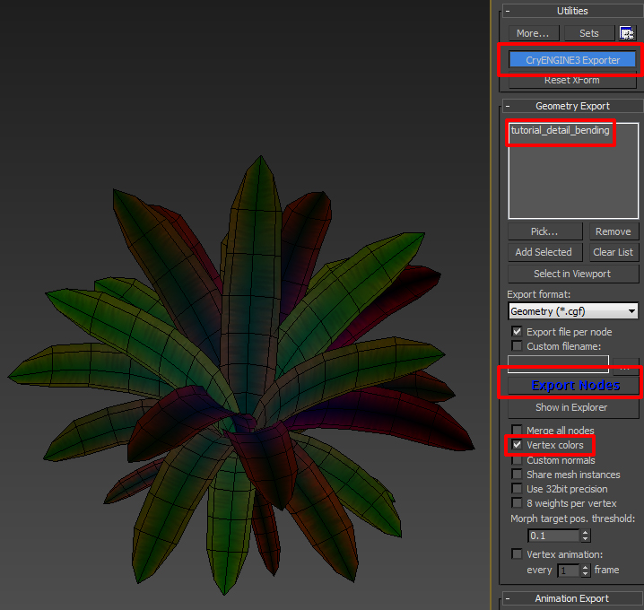
Рис. 18. Добавление актива в экспортер с установленными правильными флагами экспорта.
Продолжить CRYENGINE
Мы завершили настройку 3dsMax части руководства. Чтобы продолжить, перейдите на следующую страницу, где мы настраиваем материал и используем инструмент «Растительность», чтобы разместить некоторые из этих деталей гибки.